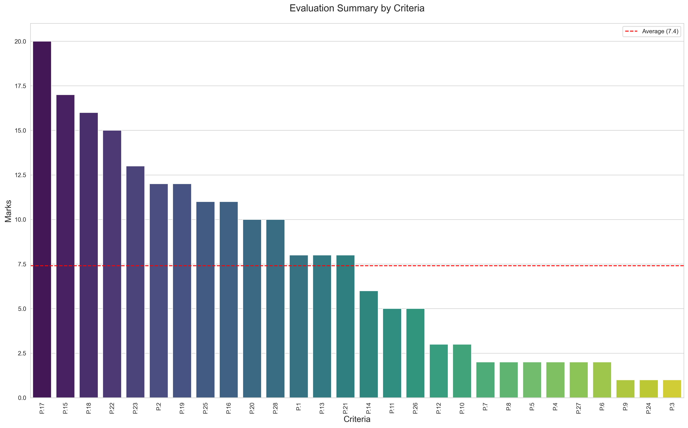
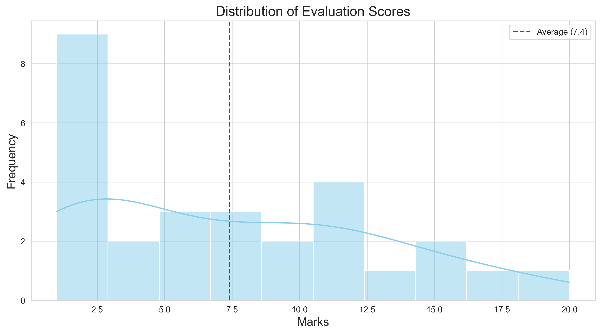
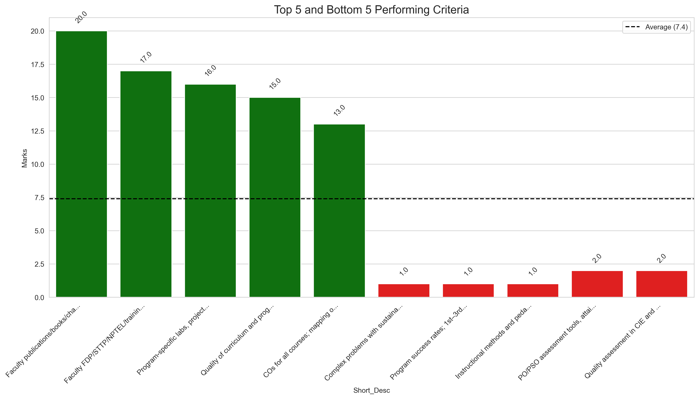
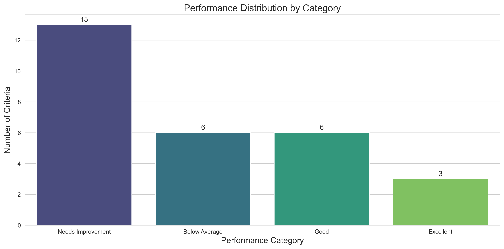

1. Overall Performance by Criteria

2. Score Distribution

3. Top and Bottom Performers

4. Performance Categories

Key Insights
✅ Strengths (Scores ≥ 15):
- Faculty research output (P.17): 20.0
- Faculty training and development (P.15): 17.0
- Lab facilities (P.18): 16.0
⚠️ Areas Needing Improvement (Scores ≤ 5):
- Teaching methods (P.24): 1.0
- Sustainability initiatives (P.3): 1.0
- Program success rates (P.9): 1.0
📊 Overall Statistics:
- Average Score: 7.4
- Highest Score: 20.0 (P.17 - Faculty research output)
- Lowest Score: 1.0 (Multiple criteria)
- Number of criteria below average: 15/28